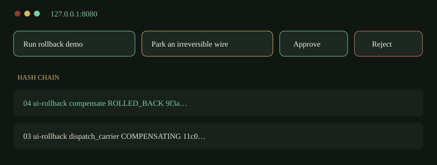

Lesson 02

You need JDK 21 and Maven. The demo process uses an in-memory log, so Docker is optional.
mvn -B -pl mcp-tx-proxy -am package -DskipTests java -jar mcp-tx-proxy/target/tx-engine.jar demo --port 8080
On Windows, examples/demo.ps1 points JAVA_HOME at Temurin 21 and starts the same jar. Open http://127.0.0.1:8080/.
adjust_ledger moves 100 from account A to B. The mutation runs on a schema or copy-on-write branch. The main balances stay put until publish.move_stock adds two units of SKU-1 on a catalog branch. Unchanged rows are shared with the previous snapshot.dispatch_carrier is a compensatable API call. Its shadow returns the recorded dry-run example. The live handler returns HTTP 500.Policy allows the plan: two of four ledger accounts change, which is under the 75 percent row threshold, and the money delta is 100, under the 1,000 limit. After the carrier fails, compensation restores the ledger map and the lakehouse snapshot. The pill reads ROLLED_BACK. The hash chain grows through shadow, policy, live attempts, and compensate-2, compensate-1, compensate-0.
Park an irreversible wire starts send_wire. The tool is IRREVERSIBLE, so an allow from policy still pauses. The state is ESCALATED_HITL and the hold reason is APPROVAL_IRREVERSIBLE. Each click uses a new transaction id, ui-wire-1, ui-wire-2, and so on.
ROLLED_BACK.Set ATP_WAL_DIR to a directory and the same demo writes wal.bin plus an anchor file. Set ATP_JDBC_URL, ATP_JDBC_USER, and ATP_JDBC_PASSWORD to use PostgreSQL instead. examples/docker-compose.yml does that. SQL for the demo ledger still runs on the in-memory adapters unless you point a real workload at JDBC. The compose file is the durable journal, not a Neon branch.